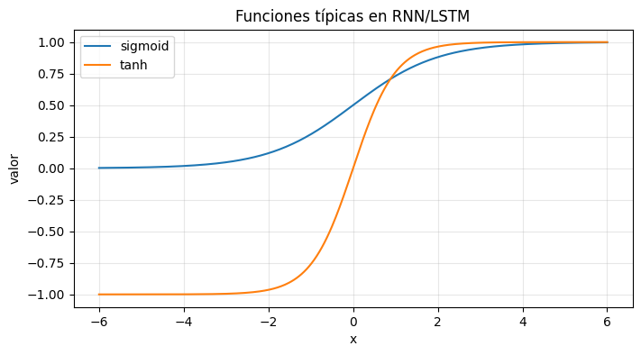

¿Qué es una Red Neuronal Recurrente (RNN) y por qué existe? 🔁🧠#
Este notebook es conceptual y sirve como puerta de entrada antes de pasar al cálculo manual y al código.
Aquí vas a entender:
qué cambia en la arquitectura cuando pasamos de una red “clásica” (feedforward) a una RNN,
qué significa “memoria” en términos de estado oculto,
qué es el “desenrollado” (unrolling) en el tiempo,
por qué aparece el gradiente desvaneciente,
y cómo LSTM introduce compuertas (gates) para controlar el olvido y la escritura de memoria.
1) Recordatorio: feedforward ≠ secuencia#
En una red feedforward (MLP), cada ejemplo se procesa “de una vez”:
entrada \(x\) → capas → salida \(\hat{y}\)
Pero en datos secuenciales, el orden importa:
series de tiempo (ventas, clima, GMV, precios)
texto (palabras en orden)
audio (señal temporal)
📌 Problema: si procesas solo el último valor \(x_t\), pierdes el contexto: \(x_{t-1}, x_{t-2}, ...\)
2) La idea central de una RNN: estado oculto (memoria)#
Una RNN procesa una secuencia paso a paso y mantiene un estado oculto (h_t).
En cada instante \(t\), la red mezcla:
lo nuevo: \(x_t\)
lo que “recuerda”: \(h_{t-1}\)
Ecuación típica (RNN simple):
Intuición BI#
\(h_t\) es un resumen comprimido del pasado, como un “estado del sistema” que se va actualizando.
3) Diagrama: feedforward vs RNN (Mermaid)#
3.1 Feedforward (una sola entrada)#
flowchart LR
X[x] --> H[Capas ocultas] --> Y[ŷ]
3.2 RNN (recurrente)#
flowchart LR
Xt["x(t)"] --> Ht["h(t)"]
Hprev["h(t-1)"] --> Ht
Ht --> Yt["y_hat(t)"]
Ht --> Hnext["h(t+1)"]
4) “Desenrollado” en el tiempo (Unrolling)#
Entrenar una RNN se entiende mejor si la “desenrollas”:
la misma celda se repite para (t=1,2,3,…)
los pesos (W_{xh}, W_{hh}) se comparten en todos los tiempos
flowchart LR
X1[x_1] --> H1[h_1] --> H2[h_2] --> H3[h_3]
X2[x_2] --> H2
X3[x_3] --> H3
H1 --> Y1[ŷ_1]
H2 --> Y2[ŷ_2]
H3 --> Y3[ŷ_3]
📌 Esto explica por qué el entrenamiento se llama Backpropagation Through Time (BPTT): el error se propaga desde el final hacia atrás, atravesando los pasos temporales.
5) El problema del gradiente desvaneciente (y explotante)#
Durante BPTT, la señal de gradiente se multiplica repetidamente por términos relacionados con:
derivadas de activación (tanh/sigmoid)
la matriz recurrente \(W_{hh}\)
Si esas multiplicaciones tienden a producir valores menores que 1, el gradiente se hace muy pequeño:
Consecuencia: la red aprende sobre todo de lo reciente → “memoria corta”.
También puede pasar lo contrario (gradiente muy grande): gradiente explotante.
6) ¿Cómo lo arregla LSTM? Memoria + compuertas#
LSTM añade un estado extra: estado de celda \(c_t\), pensado como una autopista de memoria.
La actualización se controla con compuertas (valores entre 0 y 1 con sigmoide):
Forget gate \(f_t\): qué parte de \(c_{t-1}\) se conserva
Input gate \(i_t\): qué parte de la información nueva se escribe
Output gate \(o_t\): qué parte de la memoria se expone como \(h_t\)
Ecuaciones (forma estándar):
(\odot) es producto elemento a elemento.
7) Diagrama conceptual de LSTM (Mermaid)#
Este diagrama no pretende ser “electrónico” sino pedagógico:
flowchart LR
subgraph Cell["LSTM cell (time t)"]
Xt["x(t)"] --> G1["Input gate i(t)"]
Xt --> G2["Forget gate f(t)"]
Xt --> G3["Output gate o(t)"]
Hprev["h(t-1)"] --> G1
Hprev --> G2
Hprev --> G3
Cprev["c(t-1)"] --> Update["Update memory"]
G2 --> Update
G1 --> Update
Update --> Ct["c(t)"]
Ct --> Out["Compute h(t)"]
G3 --> Out
Out --> Ht["h(t)"]
end
Ct --> Cnext["c(t+1)"]
Ht --> Hnext["h(t+1)"]
8) ¿Qué “aprende” una compuerta?#
Piensa en compuertas como decisiones suaves:
si \(f_t \approx 1\) → conservas memoria
si \(f_t \approx 0\) → olvidas
si \(i_t \approx 1\) → escribes información nueva
si \(o_t \approx 1\) → expones más memoria a la salida
Eso hace a LSTM muy útil para patrones con distintos horizontes:
corto plazo (ruido, cambios recientes)
largo plazo (estacionalidad, ciclos, eventos importantes)
9) Conexión con los notebooks del curso#
Con esto ya estás listo para:
Notebook 1: sesión manual (ver el flujo de memoria con números)
Notebook 2: clase
SimpleRNN(construir el “cerebro” en NumPy)Notebook 3: caso café con SimpleRNN (pipeline + evaluación)
Notebook 4: caso café con LSTM (comparativa vs SimpleRNN)
Notebook 5: BTC con BiLSTM (volatilidad + baseline + modo offline)
📌 Este notebook (definiciones + diagramas) es el mejor “arranque” para que los estudiantes entiendan el mapa general.
import numpy as np
import matplotlib.pyplot as plt
x = np.linspace(-6, 6, 400)
sigmoid = 1 / (1 + np.exp(-x))
tanh = np.tanh(x)
plt.figure(figsize=(8, 4))
plt.plot(x, sigmoid, label="sigmoid")
plt.plot(x, tanh, label="tanh")
plt.title("Funciones típicas en RNN/LSTM")
plt.xlabel("x")
plt.ylabel("valor")
plt.grid(True, alpha=0.3)
plt.legend()
plt.show()
